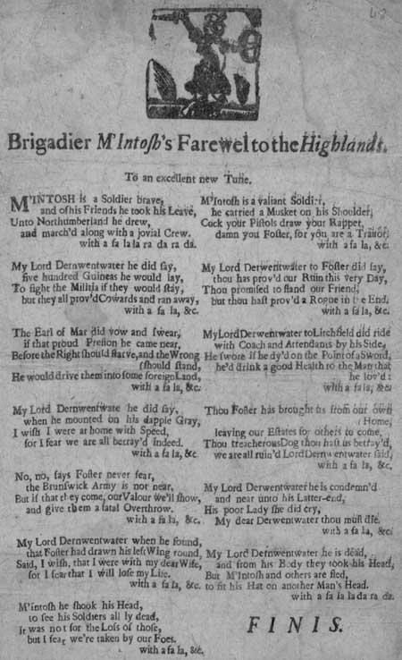

BRIGADIER MCKINTOSH'S FAREWELL TO THE HIGHLANDS.
.
To an excellent new Tune.. (1716)
.
1. McKintosh is a soldier brave,.
And of his friends he took his leave,.
Unto Northumberland he drew,.
And march'd along with a jovial crew..
My Lord Derwentwater he did say,
Five hundred guineas he would lay,
To fight the Militia if they would stay,
But they all prov'd cowards and ran away,
with a fa la la ra da ra da.
with a fa la la ra da ra da.
with a fa la la ra da ra da.
2. The Earl of Mar did vow and swear,
If that proud Preston he came near,
Before the right should starve, and the wrong should stand,
He would drive them into some foreign land,
My Lord Dernwentwater he did say,
When he mounted on his dapple gray,
I wish I were at home with speed,
For I fear we are all betray'd indeed.
with a fa la, &c.
3. No, no, says Foster never fear,
The Brunswick Army is not near,
But if that they come, our valour we'll show,
And give them a fatal overthrow.
My Lord Dernwentwater when he found,
That Foster had drawn his left wing round,
Said, I wish, that I were with my dear wife,
For I fear that I will lose my life.
with a fa , la, &c.
4. McKintosh he shook his head,
To see his soldiers all ly dead,
It was not for the loss of those,
But I fear we're taken by our foes.
McKintosh is a valiant soldier,
He carried a musket on his shoulder:
Cock your pistols draw your rappet,
Damn you Foster, for you are a traitor.
with a fa la, &c.
5. My Lord Derwentwater to Foster did say,
Thou has prov'd our ruin this very day,
Thou promised to stand our friend,
But thou hast prov'd a rogue in the end.
My Lord Derwentwater to Litchfield did ride
With coach and attendants by his side,
He swore if he dy'd on the point of a sword,
He'd drink a good health to the man that he loved:
with a fa la, &c.
6. Thou Foster has brought us from our own home,
Leaving our estates for others to come.
Thou, treacherous dog, thou hast us betray'd,
We are all ruin'd, Lord Derwentwater said,
My Lord Derwentwater he is condemn'd,
And neat unto his latter-end,
His poor Lady she did cry,
My dear Derwentwater thou must die.
with a fa la, &c.
7. My Lord Dernwentwater he is dead,
And from his body they took his head,
But McKntosh and others are fled,
To fit his hat on another man's head.
With a fa la la da ra &c.
FINIS.
|

Broadside from the National Library of Scotland Collection
Probable date published: 1716 shelfmark: S.302.b.2(048)
|
L'ADIEU AUX HIGHLANDS DU BRIGADIER MCKINTOSH
Sur un excellent air nouveau.. (1716)
1. McKintosh, un soldat vaillant,
Vient de prendre congé, dit-on,
Pour aller en Northumberland
Avec d'autres joyeux lurons.
Lord Derwentwater le dit bien:
Ils recevront cinq cents guinées
S'ils écrasent les Miliciens,
Mais, ces peureux, ils ont tous fui!
sur l'air du fa la la ra da ra da.
sur l'air du fa la la ra da ra da.
sur l'air du fa la la ra da ra da.
2. Le Comte de Mar devant tous
Promit à Preston, s'il devait
Céder à la force, qu'il nous
Ferait partir à l'étranger
Lord Derwentwater déclara
En montant sur son cheval gris.
"Il me tarde d'être chez moi,
Car, j'en ai peur, on nous trahit."
sur l'air du fa la la ra da ra da.
3. Non, dit Foster, ne tremblez pas,
Et si Brunswick et son armée
Approchaient, nos vaillants soldats
A plate couture les battraient.
Quand Derwentwater s'aperçut,
Que notre aile droite cédait,
Il dit "Femme, je suis perdu,
Je ne te reverrai jamais!".
sur l'air du fa la la ra da ra da.
4. McKintosh secoua la tête
Voyant tous ses soldats sans vie:
"Ce n'est pas leur mort qui m'inquiète
Mais d'être pris par l'ennemi".
McKintosh, soldat éprouvé
Portait un mousquet sur l'épaule:
"Ta rapière et tes pistolets
Qu'en fais-tu, Foster, vilain drôle!"
sur l'air du fa la la ra da ra da.
5. Derwentwater dit à Foster
"C'est toi qui causes notre perte,
Tu fais le jeu de l'adversaire,
Et prouves que tu n'es qu'un traître."
Derwentwater rejoint Litchfield
Et son escorte et sa calèche
"Que l'on me passe par le fil
De l'épée: j'en serais bien aise:
sur l'air du fa la la ra da ra da.
6. Foster, tu nous as fourvoyés
Afin que nous perdions nos terres.
Traître, qui nous a tous ruinés!"
S'écriait Lord Derwentwater.
Lord Derwentwater condamné
Mourut dignement sous la hache.
Et son épouse eut beau pleurer,
Son cher époux ne fut point lâche.
sur l'air du fa la la ra da ra da.
7. Derwentwater sur l'échafaud
Mourut. On détacha la tête,
McKintosh a pris son chapeau
Pour en coiffer un autre maître.
sur l'air du fa la la ra da ra da.
FIN.
(Trad. Ch.Souchon(c)2005)
|